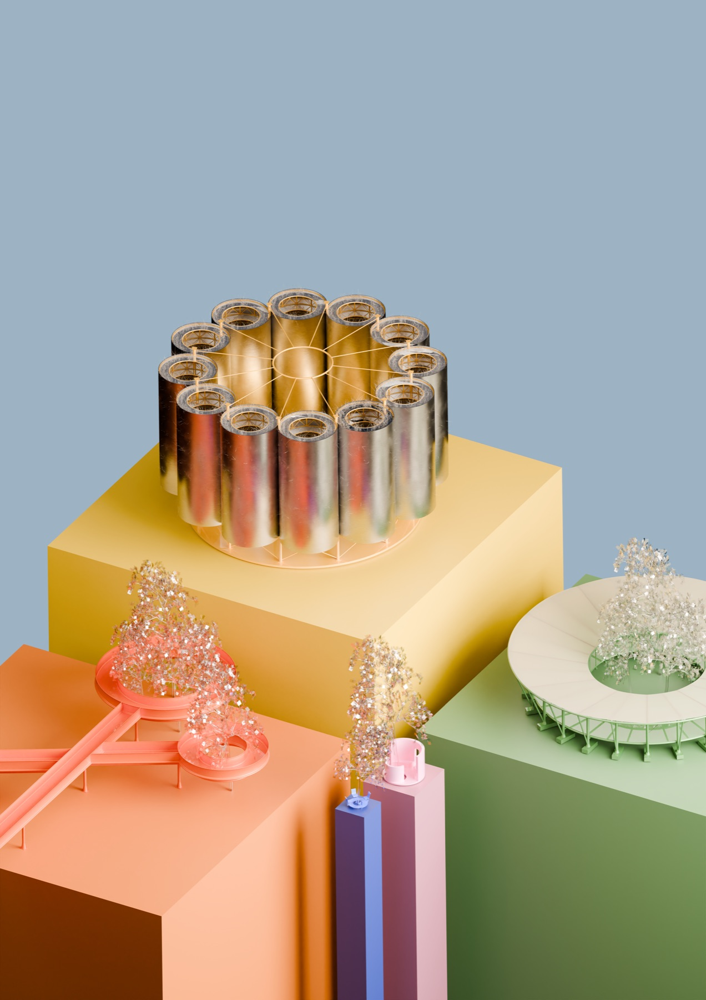
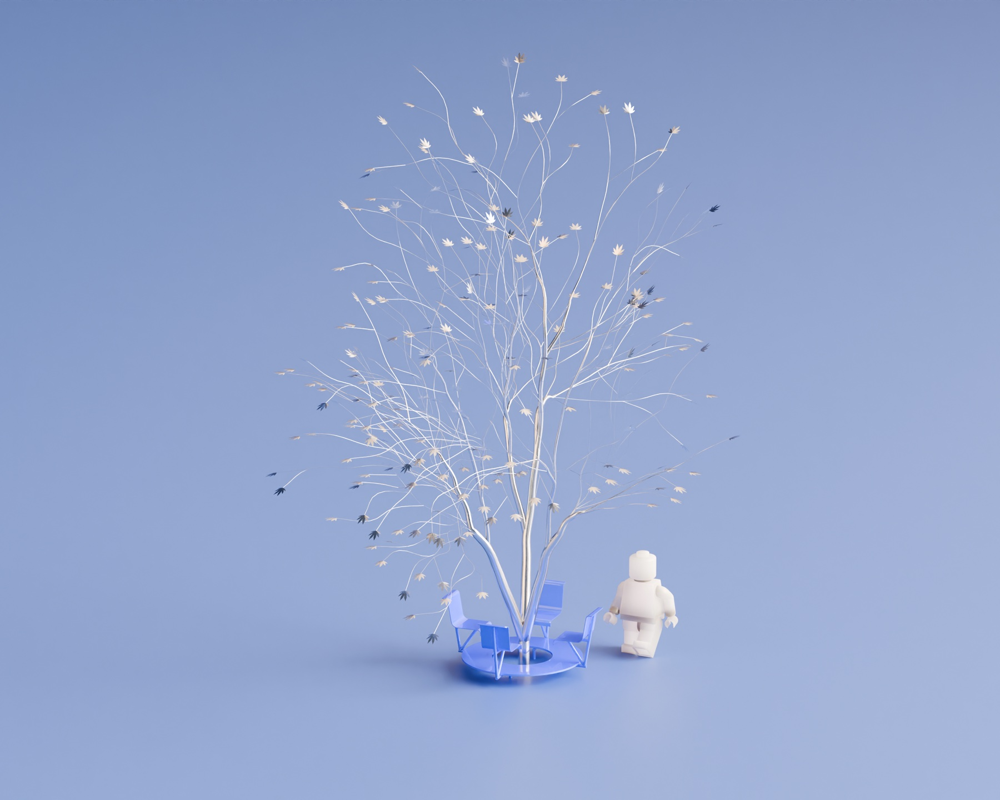
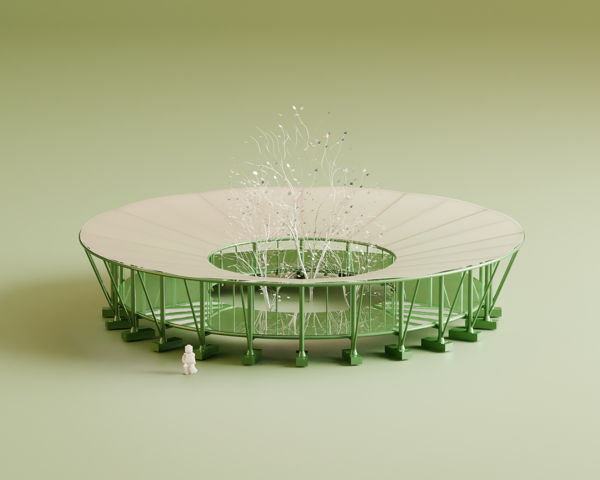
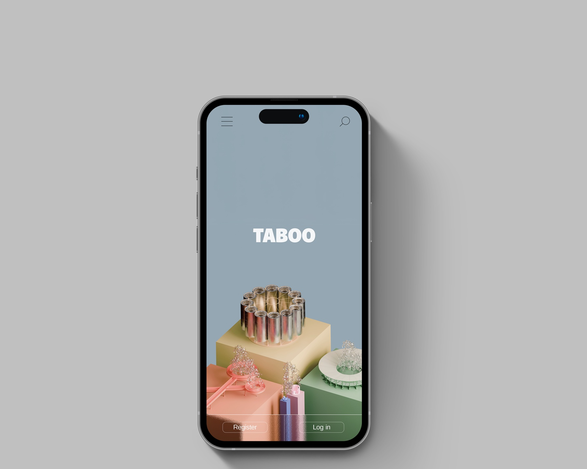
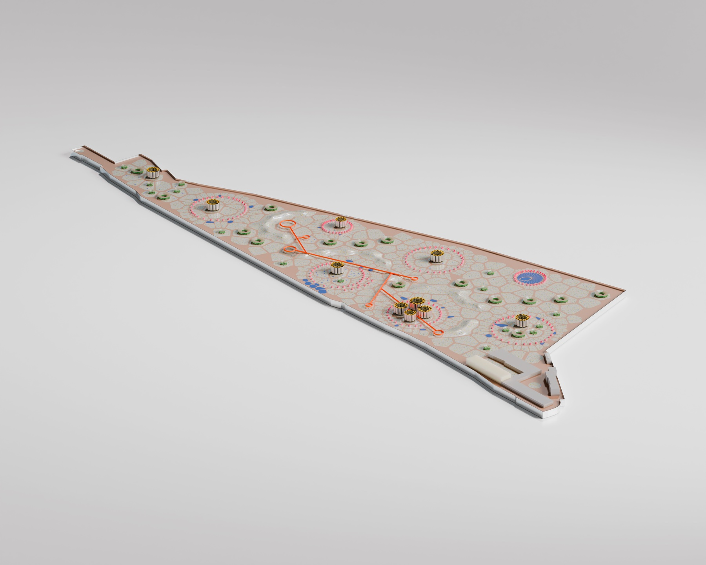
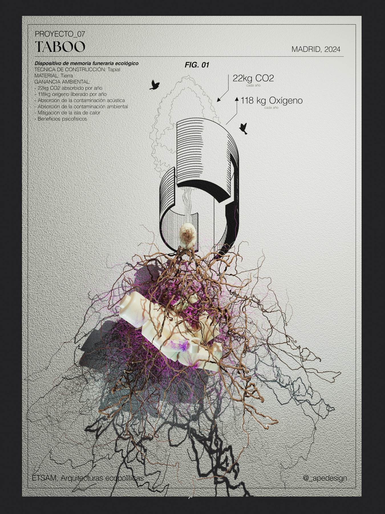
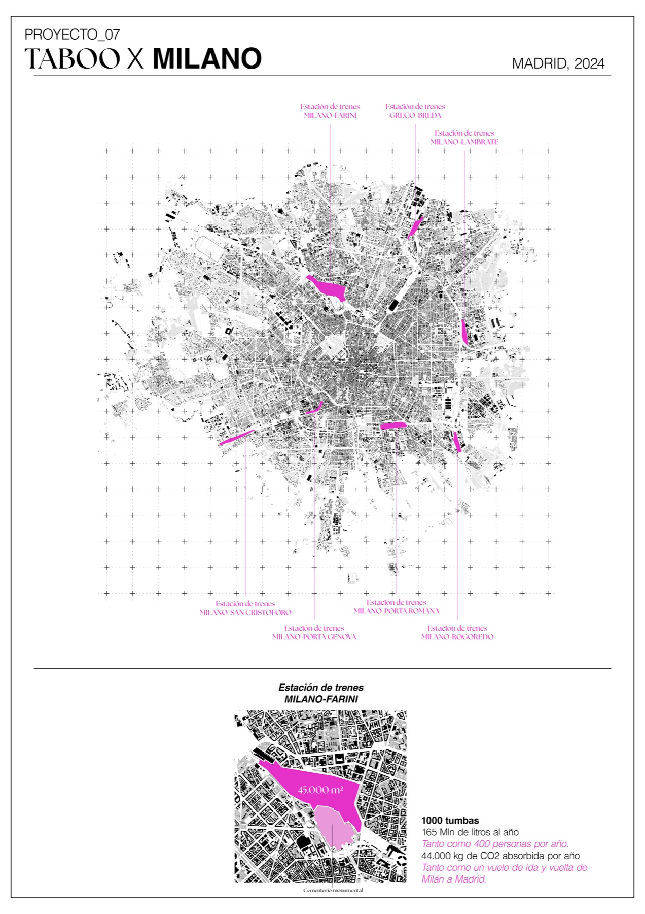
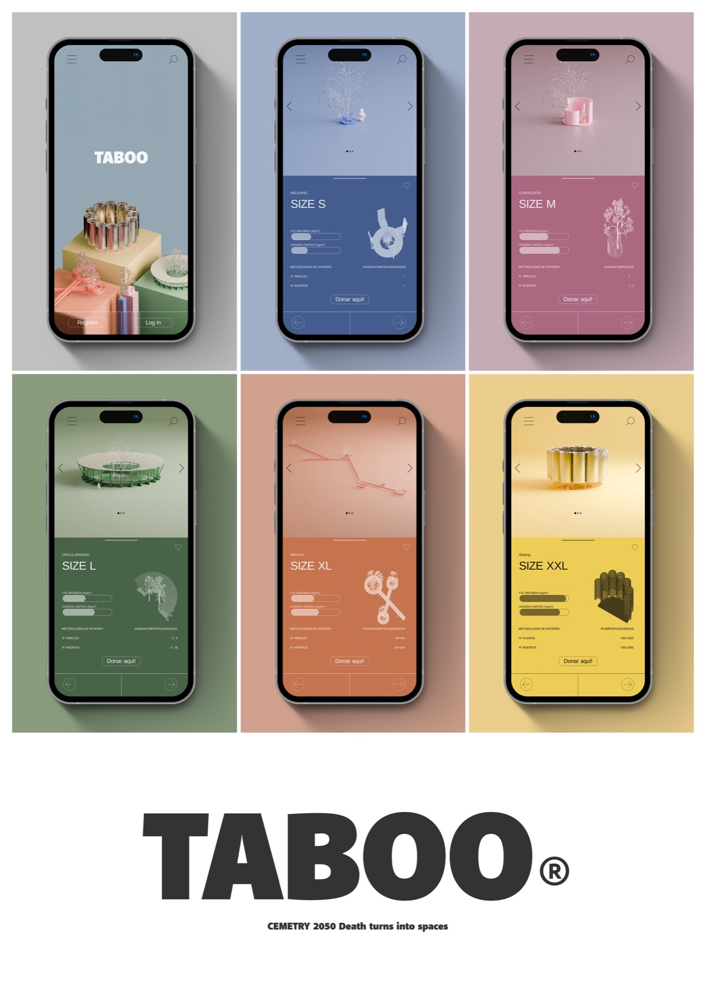
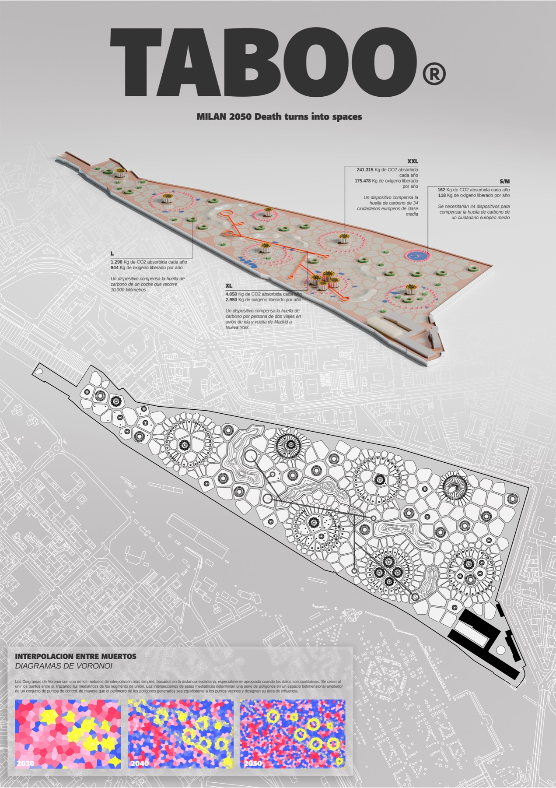

Taboo
- Location
- Madrid, ETSAM
- Year
- 2024
- Professor
- Lys Villalba
This project is preceded by research into the impact that burial can have on the environment, in terms of CO₂ emissions and of space. While its weight on the global environmental balance is small, its social weight is significant. Cemeteries are places of memory, yet they are non-places: small cities on the edges of cities, silent and lived in grief. Taboo sets out to reflect on, and propose, a different way of relating to death. Each of the dead leaves a social and environmental contribution: a tree, or another plant. The tree is a living symbol of the dead, nourished by their very matter; meanwhile the space is regenerated and the cemetery becomes a large park, to be lived in every day.
The burial devices are divided into categories of size, according to the number of dead they hold, up to a kind of collective niche: green towers that become the lungs of the city. These plant towers would receive all those without a fixed home, who in life never had the chance to take an active part in society; through aquamation (a more sustainable, lower-impact alternative to cremation) they would become fertiliser for the towers. True integration into society does not happen in life, but in death. One truly puts down roots only where one is buried.
Aware of the strong provocation of this project, which seeks to lift from death its dramatic weight, I invite you to reflect on what we are, what we were and what we will be. Death, besides being a moment of personal reflection, can be an occasion for urban regeneration, giving new life to our remains.










